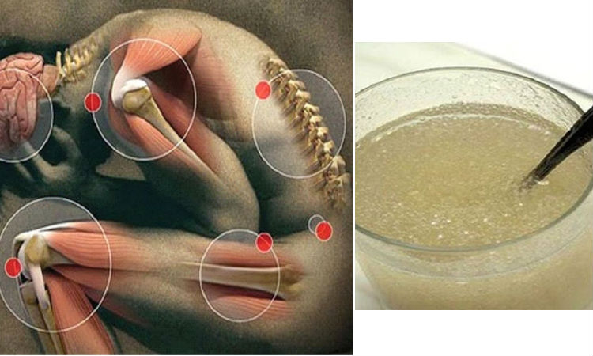

Si Doc Willie Ong ay magbubunyag ng rebelasyon sa isang Eksklusibong Panayam sa Sikreto sa Pagtatapos ng Pinagsamang Sakit!
Ang aming panauhin ngayon ay isang maalamat, makabago at kontrobersyal, na si Doc Willie Ong.

Ang pananakit sa kasukasuan ay lubos na nakakaapekto sa buhay ng mga tao, ngunit ayon kay Doc Willie Ong maaari itong malutas sa isang napaka-simpleng paraan!
Mayroon akong maraming taon na karanasan at masisiguro ko na ang karamihan sa mga problema sa kasukasuan at kahit na sa buto ay sanhi ng pamamaga sa mga kasukasuan at hindi ng mga problemang nauugnay sa collagen, tulad ng paniniwala ng karamihan.

Pagdating sa buto, ano ang mga pangunahing reklamo mula sa mga pasyente ni Dr. Willie?
Sa karamihan ng mga kaso, ang mga reklamo ay tungkol sa pananakit sa kasukasuan, mula sa banayad at katamtaman hanggang sa nakakapanghinang sakit. Marami sa mga pasyenteng ito ang gumugol ng taon sa paghahanap ng isang solusyon sa kanilang sakit ngunit hindi sila nakakahanap ng isang bagay tulad ng Flexibility.

Sa karamihan ng mga kaso makikita ng malinaw ang isang pagkabulok ng mga istruktura ng kasukasuan dahil sa pamamaga, na may inflamed cartilage at iba pang mga elemento na nag-iiwan ng walang pamamaraan para malayang gumalaw ang mga kalamnan at litid sa mga buto. Ito ang siyang nagdudulot ng mas seryoso at maraming problema.


Makakatulong ba ang anumang uri ng mga gamot laban sa pamamaga? Maaari ka bang magbigay pa ng dagdag na kaalaman patungkol dito?
Sa katunayan, hindi ito tungkol sa uri ng gamot na laban sa pamamaga. At kung ito’y sakali man, mapapadali nitong malutas ang problema. Ang malaking problema natin ay kailangan nating gawin ang paggamot sa tamang uri ng medisina at mga sukat na sapat upang talagang mabuhay muli ang mga tisyu ng mga kasukasuan at sa huli ay matanggal ang pananakit.
Ang sangkap na kailangan upang maalis na ng tuluyan ang pananakitakit sa kasukasuan ay tinatawag na Langis ng Wintergreen, na pangunahing sangkap ng Flexibility. Kaya sinasabi ko na ang solusyon ay ang gel na ito. Sa wastong pang-araw-araw na dosis o sukat ng ganitong uri ng langis ng wintergreen ang iyong katawan ay natural na dinidisimpekta at patuloy na binabago ang iyong mga kasukasuan.
Paano Magaganap ang Pag-recover ng Pasyente? Maaari mo bang sabihin sa amin ang tungkol dito, Dr. Willie?

Karamihan sa mga kaso ay may kahalintulad na proseso ng paghilom. Karamihan sa mga pasyente na dumating na may matinding sakit, ang ilan kahit na may mga problema sa madaliang pagkilos, ay napapabuti araw-araw dahil sa paggamit ng Flexibility. Sa mas may malubhang kaso (mga mayroon nang mga problema sa pagkilos), kakikitaan na ito ng magandang resulta pagkatapos ng halos 7 araw. Maaari na nilang maisagawa ang mga simpleng gawain tulad ng pagpunta sa tindahan.
Ngayon, sa halos 2 linggo ng paggamot, mapapansin na natin ang pinaka mahalagang pagbabago, kahit na sa mga may kaso ng matinding sakit sa buto, mayroong isang pagbubuti na ginagawa para mag-mukha itong isang kumpletong lunas. Ang mga tao ay ganap na rehabilitado, nang walang anumang uri ng sakit, at maaaring bumalik sa paggawa ng mga pisikal na ehersisyo, na alam naming lubos na kapaki-pakinabang para sa kalusugan
Paano mo na pagpasyahan na ang Flexibility ay makakatulong sa iyong mga pasyente?
Marami sa aking mga pasyente, ang mga pisikal na aktibidad tulad ng hiking ay kritikal para sa paggaling. Ako ay napilitan upang makahanap ng solusyon para sa pananakit ng kasukasuan. Marami sa aking mga pasyente ang hindi na nakakapaglakad nang maigi dahil sa sakit.
Mukhang kapanapanabik. Bigyan mo pa kami ng karagdagang kaalaman tungkol sa Flexibility.
Sige,Ilalahad ko yan. Ang pumukaw sa aking pansin sa una pa lamang ay ang mga sangkap na ginamit sa Flexibility. Maiintindihan mo kung bakit ko pinatunayan na ang gel na ito ay isang tunay na himala para sa mga kasukasuan:
- LANGIS NG EUCALYPTUS;
- 99,5% PURE COLLAGEN;
- Langis ng WINTERGREEN;
Sa kasamaang palad, ang karamihan ng mga sangkap na makikita sa ating bansa ay walang kalidad ng mga inaangkat, na sanhi ng pagkaroon ng maraming problema sa kasukasuan ang ating populasyon. Ang maaari nating gawin ay pag punan ito sa Flexibility dahil kadalasan ay wala ang mga sangkap na ito sa ating pagkain.
Salamat sa natatanging pormula nito, madaling makitungo ang Flexibility sa anumang problema sa kasukasuan at iba pang mga sakit na karaniwan sa ating bansa:
- Artritis;
- Arthrosis;
- Pagkawala ng memorya;
- Pag-iwas at paggamot sa cancer;
- Kinokontrol ang Diabetes;
- Osteoporosis;
- Mga pinsala sa meniskus;
- Pamamaga.
Ito ay hindi kapani-paniwala! Ang Flexibility ba ay isang Tunay na Lunas? Mayroon bang mga Panganib sa Paggamit Nito, Dr. Willie?
Hindi, ang Flexibility ay hindi gamot at walang naiulat na mga masamang epekto o kahit na isang uri ng paghihigpit sa paggamit nito, ito ay ganap na ligtas at napakabisa.
Tulad ng alam mo na ako ay isang tagahanga ng natural na paggamot, nakikita ko sila nang mas mahusay para sa ating kalusugan dahil hindi sila agresibo tulad ng maraming maginoo na paggagamot. Siyempre may mga kaso na kinakailangan lunasan gamit ang mga gamot, ngunit kung posible ay inirerekumenda ko na ang paggamot ay dapat na natural hangga't maaari, tulad ng paggamit ng Flexibility (na 100% natural) upang gamutin ang sakit sa kasu-kasuan.
Saan ako makakabili ng Flexibility?
Sa kasamaang palad, hindi pa posible na bilhin ito sa mga botika. Ang mga botika ay pinangingibabawan ng mga malalaking commercial chain, ang mga natural na produkto ay mahirap makakuha ang puwang sa mga botika. Bilang karagdagan, ibinebenta nila ang kanilang mga produkto sa napakataas na presyo. Minsan ang mga gamot na ito ay may kakila-kilabot na mga masamang epekto. Ang magandang balita ay maaari kang bumili ng Flexibility nang direkta mula sa website ng gumawa nito at sa loob ng ilang araw ay makakarating ito sa iyong bahay.
Magandang Balita para sa aming mga Mambabasa!
Sa sandaling ginawa namin ang panayam na ito kay Doc Willie Ong nakipag-ugnay kami sa tagagawa ng Flexibility
at nakakuha kami ng isang Malaking Diskwento para sa aming mga
mambabasa hanggang sa pagtatapos ng araw na ito. Matapos ang petsang ito ang mga
presyo ay babalik sa normal at wala ring paraan upang magarantiyahan kung magkakaroon pa ng stock ng
produktong ito.
Ingatan ang iyong kalusugan! Ito ang pinakamahusay na magagawa mo. Walang halaga ng pera ang magbibigay
sayo ng kaligayahan.
MAHALAGA!
Nag-aalok ang aming site ng karagdagang diskwento. Subukan ang iyong kapalaran at pindutin ang pindutang "SPIN". Kung masuwerte ka, maaari kang mag-order ng produkto sa mas mababang presyo! Good luck!

 SPIN
SPIN
Magmadali upang ilagay ang iyong order bago ang diskwento ay dumaan sa susunod na mambabasa!

Gian Aquino
Dr. Willie, lubos akong nagpapasalamat sa impormasyong ito. Natanggap ko ang akin ngayon at inaasahan kong magsimula sa pagsubok!
1 oras na ang nakaraan
Amanda Oshop
Pinagaling ko ang aking osteoarthritis salamat dito! Salamat!
1 oras na ang nakaraan
Jen Justine
Nakakamangha! Natanggap ko na ang akin at gustong gusto ko ito, guminhawa ang aking sakit.
1 oras na ang nakaraan
Allen Manuel
Salamat sa kamangha-manghang ito, Dr. Willie! Napagpasyahan kong subukan ang Flexibility para sa aking osteochondrosis at talagang malaki ang naitulong nito sa akin. Magiging maayos na ako!
1 oras na ang nakaraan
Doc Willie Ong
Allen, huwag mag-alala at ipagpatuloy ko ang paggamit ng Flexibility. Huwag kalimutang sundin ang mga tagubilin. Malugod na pagbati, Willie
1 oras na ang nakaraan
Gabroi Arganosa
Sobrang sakit na ng aking likod. Napapagod nako nito ng sobra. Hindi ko na alam ang gagawin ko. Ininom ko na ang lahat ng uri ng mga tabletas, gumamit na din ako ng iba't ibang mga gels ngunit walang nakatulong :(
1 oras na ang nakaraan
Jeremiah Isip
Gabroi, bumili ka ng Flexibility, hindi mo ito pagsisisihan. Nagkaroon din ako ng mga problema sa mga kasukasuan ko hanggang sa punto na hindi na ako makalakad. Sa kabutihang palad, natagpuan ng aking ina ang balsamo na ito at inalok ito sa akin. Binili niya ito 6 na buwan na ang nakakaraan sa orihinal na presyo (na hindi naman talaga mahal). At ngayon wala akong mga problema sa kasukasuan. Maaari na akong gumalaw ng normal. Maniwala ka sa akin, mahusay ito! Maaari ka pa ring mag-order ng may diskwento na 50%.
1 oras na ang nakaraan
Patricia Jose
Inorder ko ang balsamo na ito dalawang buwan na ang nakakaraan mula sa aking kapatid na matagal nang nagdurusa sa sakit sa buto. Napakasaya niya ngayon. Pasimple akong kumuha ng isang pagkakataon at umorder.
1 oras na ang nakaraan
Jesser Duran
Patricia, talagang epektibo ba ito? Siguro dapat mo din akong i-pangorder nito. Mayroon pa rin bang 50% na diskwento, tama ba?
1 oras na ang nakaraan
Patrick Aquino
May narinig din ako tungkol sa produktong ito sa ilan. Sa tingin ko ang ilan sa aking mga kaibigan ay maayos na. Dalawang taon akong may sakit sa aking mga binti. Minsan ang sakit ay hindi matitiis at hindi alam ng mga doktor kung paano ako tutulungan. Nagpasiya din akong umorder ng Flexibility. Susubukan kong makita kung paano ito gumagana.
1 oras na ang nakaraan
Mark Castro
Kaya, tila maraming tao ang may magkasanib na problema. Nakita ko ang isang ad para sa Flexibility halos isang buwan na ang nakakaraan at na tulungan ako nito mula sa osteochondrosis nang mas mabilis kaysa sa maraming iba pang mga gamot.
1 oras na ang nakaraan
Joshua Dungca
Mayroon bang nakakaalam kung makakatulong ba talaga ito sa akin? Ang mga parmasya at doktor ay hindi ganoon.
1 oras na ang nakaraan
Faye Canlas
Joshua, sigurado akong makakatulong ito. Mabisa ito at walang masamang epekto. Iyon ang dahilan kung bakit dapat kanang mag order at bilhin ito! Tinulungan ako ng Flexibility na matanggal ang mga problema sa aking likuran.
1 oras na ang nakaraan
Stephanie Carlos
Salamat, natulungan ako ng Flexibility! Binili ko ito sa opisyal na website! Huwag ipagpaliban ang paggamot. Mas mahusay na magamot ngayon kaysa magsisi paglaon.
1 oras na ang nakaraan
Rachel Chua
Salamat, Dr. Willie. Kung hindi dahil sa iyo, hindi ako kailanman maniniwala sa pagiging epektibo ng Flexibility! Nabuhay ako ng 5 taon kasama ang aking asawa na may parehong problema tulad ng karamihan dito, isang kakila-kilabot na sakit. Dumanas siya ng mga sakit at ngayon ay tumatakbo sa paligid na para bang siya ay 18 taon muli. Napakabilis ng paghahatid.
1 oras na ang nakaraan
Doc Willie Ong
Rachel, Nasiyahan ako sa iyong nabanggit. Gaano katagal bago siya nakarekober. Pagbati, Willie
1 oras na ang nakaraan
Rachel Chua
Dr. Willie, tumagal ng halos isang buwan upang makarecover. Ngayon malaya siyang gumagalaw at hindi nagrereklamo tulad ng dati. Masayang-masaya ako para sa kanya.
1 oras na ang nakaraan
Doc Willie Ong
Perfeito. Salamat, Rachel.
1 oras na ang nakaraan
Francesca Tayag
Hindi ko inaasahan ang mga resulta. Ang aking Sciatica ay naglaho isang beses at para sa lahat! Inorder ko din ito para sa aking mga kaibigan. Ang isa sa kanila ay naghihirap mula sa sakit sa kanyang likuran at ang isa pa ay may kirot sa mga siko.
57 minuto ang nakalipas
Krissie Tallada
Pinunan ko lang ang form sa kanilang website ... Nagulat ako na binibenta nila ito na may 50% na diskwento! Iniwan ko ang numero ng aking telepono sa website at tinawagan nila ako makalipas ang ilang minuto at nakumpirma ang aking order. Mula ngayon, nabubuhay na ako ng walang sakit at nagsisimulang mag-enjoy muli sa aking paglalakad :)
55 minuto ang nakalipas
Lyka Mendigorin
Nag-order din ako para sa sarili ko. Sinamantala ako ng artritis sa loob ng maraming taon.Umulan man o magbago ang panahon, halos patayin na ako sa sakit. Tinulungan ako ng Flexibility sa loob ng ilang linggo. Hindi ko akalain na posible ito..
53 minuto ang nakalipas
Samantha Valdez
Flexibility ang tumulong sa akin na matanggal ang aking gout pagkatapos ng 1 paggamot lamang at ngayon ko itong ginagamit para makaiwas sa sakit
39 minuto ang nakalipas
Carlo Dizon
Nag-order din ako mula sa opisyal na pahina. Malaki ang naitulong nito sa akin. Kung mayroon kang mga problema sa mga kasukasuan, walang mas mahusay kaysa sa produktong ito, maniwala ka sa akin. Bilang karagdagan, mabilis itong dumating. dumating ang order ko sa 3 araw lang.
36 minuto ang nakalipas
Doc Willie Ong
Salamat, Carlo! Sinusubukan naming maihatid ang Flexibility sa aming mga customer nang mabilis hangga't maaari upang masimulan nila agad ang kanilang paggamot.
36 minuto ang nakalipas
Alyssa Artacho
Nabasa ko ang artikulong ito at nagpasyang mag-order ng pamahid na ito upang subukan lamang muna. Sobrang nainspire ako sa kwento. Ang totoo ay ang mga karaniwang gamot ay hindi nakatulong sa akin ng mahabang panahon. Sinabi sa akin ng mga doktor na ang arthritis ay mahirap gamutin. Para sa resulta ng paggamot - Mabilis na dumating ang Flexibility. Napakalaki ng pagbabagong naramdaman ko pagkatapos ng isang aplikasyon lamang at napagpasyahan kong ibahagi ang aking kagalakan sa lahat. Sobrang sayo ko at mabubuhay ulit ako ng normal!
31 minuto ang nakalipas
Aira Briones
Maaari bang sabihin sa akin ng isang tao kung saan ko makukuha ang produktong ito? Hindi ko ito nakikita sa mga parmasya at natatakot akong bumili online. Ayokong bumili ng peke dahil sa pagkakaalam ko ay hindi gumana ang mga iyon.
27 minuto ang nakalipas
Doc Willie Ong
Tinitiyak ko ulit na ang Flexibility ay maaaring mag-order LAMANG sa aming opisyal na website. Upang maiwasan ang hindi pagkakaunawaan, i-click lamang ang link sa itaas. Nais kong ipaalala sa iyo na ang Flexibility ay maaaring mag-order na may kasamang 50% na diskwento, ngunit ang promosyong ito ay hindi magtatagali, kaya magmadali!
Mangyaring maging maingat sa mga huwad na produkto.
15 minuto ang nakalipas